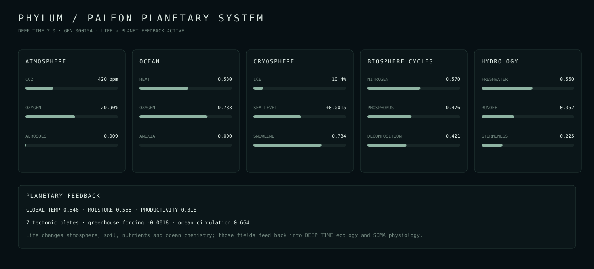

PHYLUM / PALEON
DEEP TIME 2.0 planetary systems dossier · generation 000016

Current planetary state
{
"generation": 16,
"temperature": 0.54635,
"moisture": 0.55376,
"productivity": 0.31128,
"atmosphere": {
"aerosols": 0.0113607,
"co2": 0.000419994,
"greenhouse_index": -0.00217,
"methane": 1.897e-06,
"oxygen": 0.2090006,
"pressure": 1.0
},
"ocean": {
"acidity": 0.3,
"anoxia": 0,
"circulation": 0.66069,
"current_phase": 0.091764,
"heat": 0.52908,
"nutrients": 0.60665,
"oxygen": 0.72223
},
"cryosphere": {
"ice_fraction": 0.10957,
"sea_level_anomaly": 0.00094,
"snowline": 0.73391
},
"cycles": {
"available_nitrogen": 0.56168,
"available_phosphorus": 0.47092,
"decomposition": 0.42019,
"living_carbon": 0.47072,
"ocean_carbon": 0.64,
"soil_carbon": 0.52
},
"hydrology": {
"drought_index": 0,
"evaporation": 0.50344,
"flood_index": 0,
"global_freshwater": 0.55027,
"runoff": 0.34537,
"storminess": 0.20531
},
"plates": 7
}